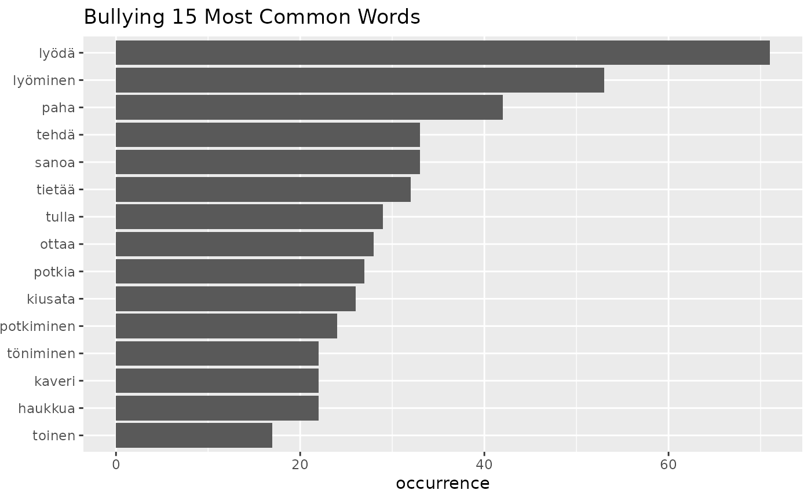

Make Top Words plot
fst_freq_plot.RdPlots most common words.
Examples
pf <- c("NOUN", "VERB", "ADJ", "ADV")
top_words <- fst_freq_table(fst_child, number = 15, pos_filter = pf)
#> Note:
#> Words with equal occurrence are presented in alphabetical order.
#> By default, words are presented in order to the `number` cutoff word.
#> This means that equally-occurring later-alphabetically words beyond the cutoff word will not be displayed.
#>
fst_freq_plot(top_words, number = 15, name = "Bullying")
